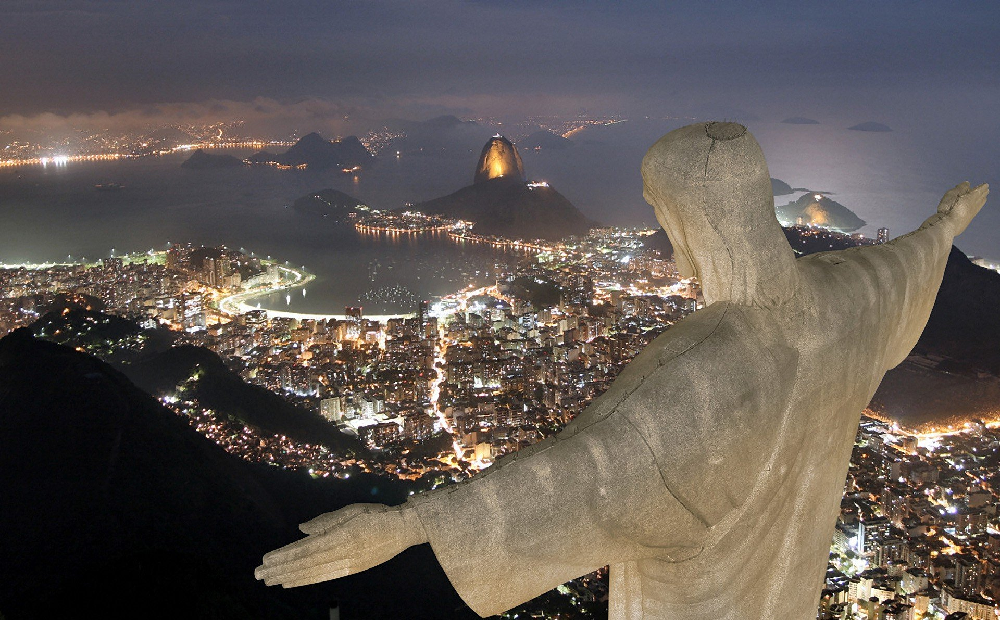
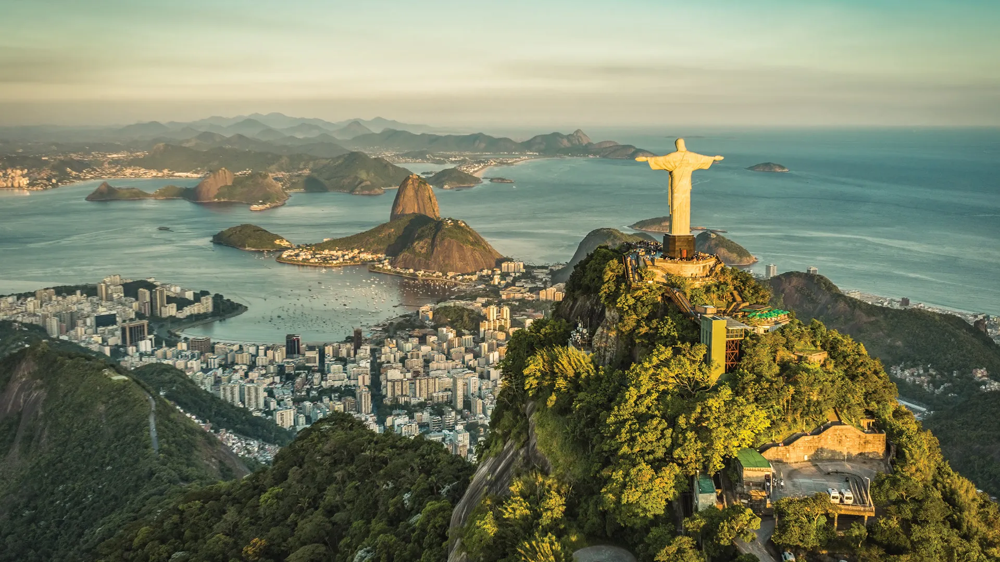
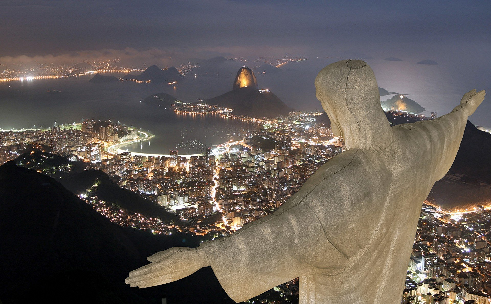
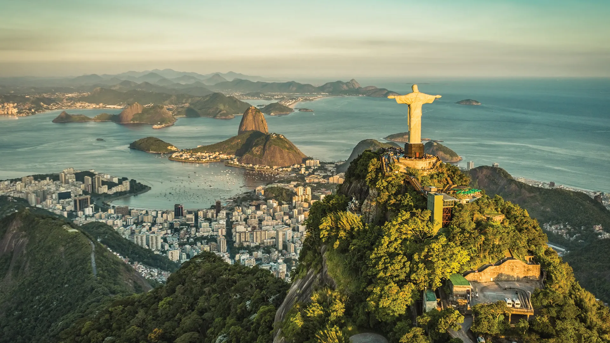

The fascinating origin behind Rio's most famous landmark
The idea of designing a massive statue of Jesus Christ in Rio first came about way back in the 1850s, when a local priest came up with the idea of placing a Christian monument on top of Mount Corcovado. Apparently he had requested Princess Isabel (the daughter of Emperor Pedro II and Princess Regent of Brazil at the time), to fund the project, but the idea was scrapped after a Declaration of the Republic was declared in Brazil in 1889 - pinnacle move as it separated the church from the state in the country. It wasn't until after World War I when the Roman Catholic archdiocese in Rio and a group of locals started becoming concerned about the “lack of religious faith” in the Brazilian community, and it was hoped that by placing a massive statue of Jesus on top of a mountain in Rio, it would rebel against what they saw as an “increasing godlessness” in the country. It was requested that the statue be placed on the summit of Mount Corcovado so it would be visible from anywhere and everywhere in Rio, and thus represent a way of “reclaiming Rio” (which was Brazil's capital city at that time) to Christianity.
 


